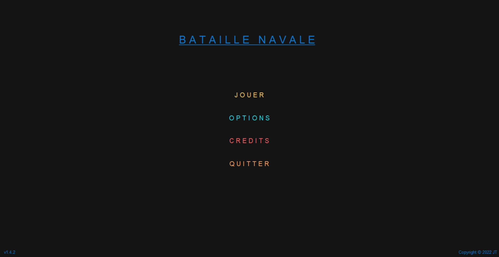
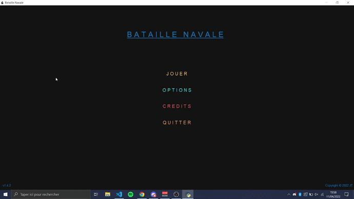
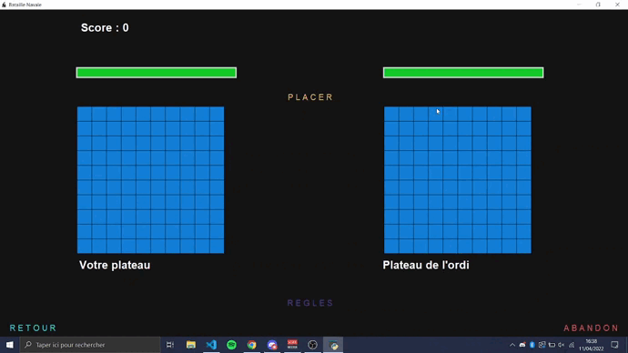
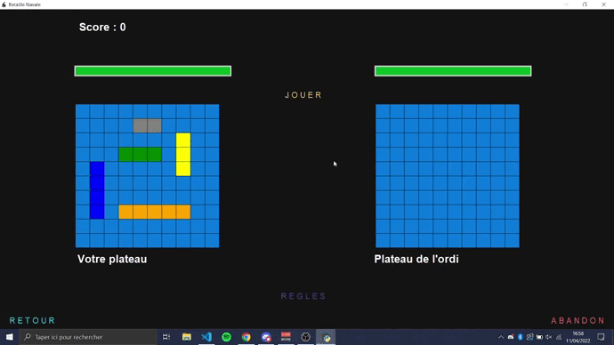

Utiliser notre jeu
Dans cette rubrique, vous trouverez les illustrations de l'ensemble des fonctionnalités que propose notre jeu de la bataille navale.
Écran de menu : Sur cette écran que vous obtenez lors du lancement du jeu, plusieurs actions vous sont proposées :
JOUER : comme cela laisse sous-entendre, vous permet de jouer à la bataille navale
OPTIONS : vous permet de pouvoir régler le volume de la musique ainsi que des sons du jeu comme bon vous semble
CREDITS : donne accès à un générique comprenant le role de chaque membre de l'équipe dans le projet ainsi que des remerciements
QUITTER : un moyen efficace de quitter l'application, tout simplement

Écran d'option de jeu : Pour accéder à cet écran, il vous suffit d'appuyer sur le bouton jouer à partir de l'écran de menu.
Sur cette fenêtre, vous avez la possibilité de configurer l'ensemble des options requises pour le déroulement du jeu : difficulté (facile, moyen ou difficile)
ainsi que votre pseudo (votre nom et la couleur du pseudo). Une fois votre choix fait, vous n'avez plus qu'à appuyer sur valider, ce qui vous ammènera sur la
fenêtre de jeu !

Écran de jeu : Une fois sur cette écran, vous pourrez observer de nombreuses fonctionnalités :
SCORE : permet d'afficher (sans trop de surprise) votre score, augmentant de 1 à chacune de vos victoires
BARRE DE VIE : sur le heut de chaque plateau se trouve une barre de vie, diminuant au fur et à mesure que les
bateaux du plateau lié à la barre de vie sont touchés. Ainsi, si une barre de vie tombe à 0, cela signifie que l'ensemble des bateaux
du plateau relié à la barre de vie ont été coulés
RETOUR : vous permet de retourner à l'écran d'option de jeu afin de les modifier si besoin
REGLES : permet d'accéder aux règles de la bataille navale, accessibles directement sur ce site
ABANDON : si vous souhaitez quitter le jeu, ce bouton est fait pour vous !
Le bouton qui nous intéressera le plus ici est le bouton PLACER : ce dernier a pour objectif de vous donner le libre choix de placer vos bateaux sur votre
plateau où bon vous semble ! (tout en empêchant les sorties de plateau ou les chevauchements de bateaux bien entendu). Il est également possible d'effectuer une
rotation du bateau de votre choix en effectuant un clic droit sur ce dernier.

Une fois les bateaux placés, il ne vous reste plus qu'à appuyer sur LANCER et vous pouvez observer vous bateaux placés sur votre plateau.
Il vous suffit d'appuyer sur JOUER, le jeu sera ainsi lancé !

Vous avez desormais toutes les cartes pour gagner, bonne chance capitaine !